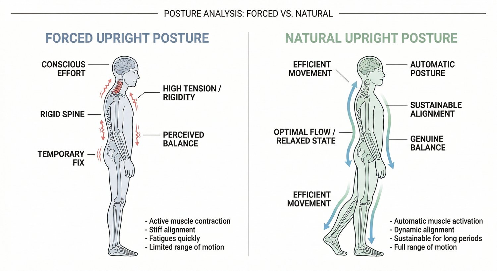
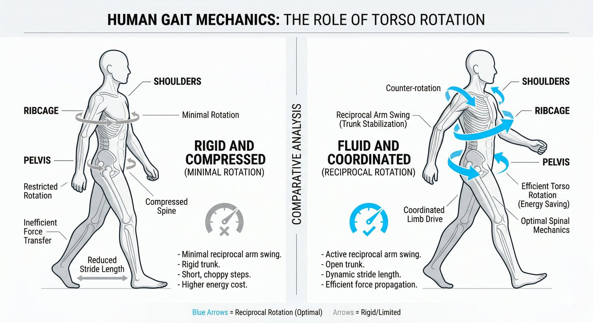

If you’ve ever tried to fix your posture, you’ve probably noticed something frustrating.
You can sit up straight. You can pull your shoulders back. You can even feel “aligned” for a while.
But the moment you stop thinking about it, everything goes back.
That’s why a lot of people end up asking:
Can posture actually be fixed permanently?
The answer is yes.
But not in the way most people think.
Why Posture Doesn’t Stay “Fixed”
Most posture advice is based on control.
You’re told to:
-
sit upright
-
pull your shoulders back
-
engage your core
And while you can do that consciously, your body doesn’t maintain posture through effort.
It maintains posture through efficiency.
Your nervous system is constantly choosing the easiest way to hold you upright based on what it can coordinate and support.
If your body doesn’t have the ability to move well, it will default to positions that require less coordination, even if those positions create tension or discomfort.
That’s why posture always “falls apart” when you stop thinking about it.
You’re not fixing the system. You’re overriding it.
Why Temporary Fixes Feel Like They Work

Stretching, mobility work, or even a good workout can make you feel more upright.
Your body feels looser. Your shoulders sit better. Your back feels less compressed.
But those changes are temporary because they don’t change how your body behaves under normal conditions.
If your movement patterns stay the same, your posture will return to the same position.
Your body always goes back to what it can sustain, not what it can briefly achieve.
What “Permanent Posture Correction” Actually Means
Permanent posture change doesn’t come from holding a position.
It comes from changing the way your body organises movement.
Posture is not something you do.
It’s something that emerges from how you:
-
walk
-
shift your weight
-
coordinate your upper and lower body
-
distribute force through your system
When those things improve, posture improves automatically.
That’s what makes it permanent.
Not effort. Not reminders. Not cues.
Better mechanics.
The Role of Gait (This Is What Most People Miss)
Walking is the most repeated movement you do every day.
It’s also where your posture is reinforced the most.

If your gait lacks proper rotation, your body becomes more rigid. The ribcage and pelvis stop working together. The upper body starts to compensate.
That often leads to:
-
rounded shoulders
-
forward head posture
-
stiffness through the upper back
-
that “collapsed” feeling when standing or sitting
Because this pattern is repeated thousands of times per day, it becomes your default.
This is why posture isn’t something you can fix in isolation.
It’s something you have to retrain through movement.
Why Strength or Flexibility Alone Won’t Fix It
A lot of people try to solve posture by:
-
getting stronger
-
becoming more flexible
-
doing posture exercises
These can help, but only to a point.
If strength is built on top of poor movement patterns, it reinforces those patterns.
If flexibility isn’t supported by control, your body won’t use it.
For posture to change permanently, your body needs to:
-
coordinate movement across joints
-
transfer load efficiently
-
maintain positions under real-world conditions
Without that, changes won’t stick.
What Actually Changes Posture Long-Term
To correct posture permanently, your body needs to become better at:
Moving with rotation instead of compression.
Distributing force across the body instead of overloading specific areas.
Coordinating the ribcage, pelvis, and limbs as one system.
This doesn’t happen from random exercises.
It happens through a structured process that retrains how your body moves, step by step.
As that improves, posture stops being something you manage and becomes something you naturally hold.
What Progress Feels Like
Permanent change doesn’t feel like forcing yourself upright.
It feels like effort disappearing.
You might notice:
-
sitting upright feels easier without trying
-
your shoulders don’t constantly pull forward
-
your neck and upper back feel less tight
-
walking feels smoother and more balanced
These are signs your system is changing, not just your position.
If You Want to Fix Your Posture Properly
If you’ve tried to fix your posture before and it hasn’t lasted, it’s not because you didn’t try hard enough.
It’s because the underlying pattern wasn’t addressed.
CTA (Assessment)
👉 Book an initial assessment at Functional Patterns Brisbane (Bulimba)
We’ll assess how your body actually moves, identify what’s causing your posture to break down, and give you a clear, structured plan to fix it properly.
Because once the pattern changes, posture follows.